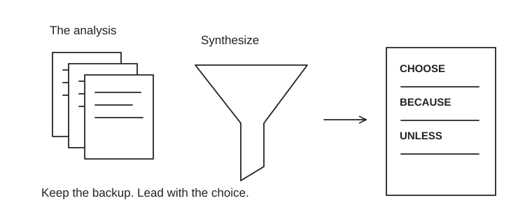

The recommendation is the product.
Executives rarely need every feature coefficient. They need the choice, financial stakes, alternatives, uncertainty and a trigger to revisit the decision. Keep technical backup available. Your next action: put “I recommend…” at the top of your next analysis and defend it with one chart.
Valuation cases and practice →
